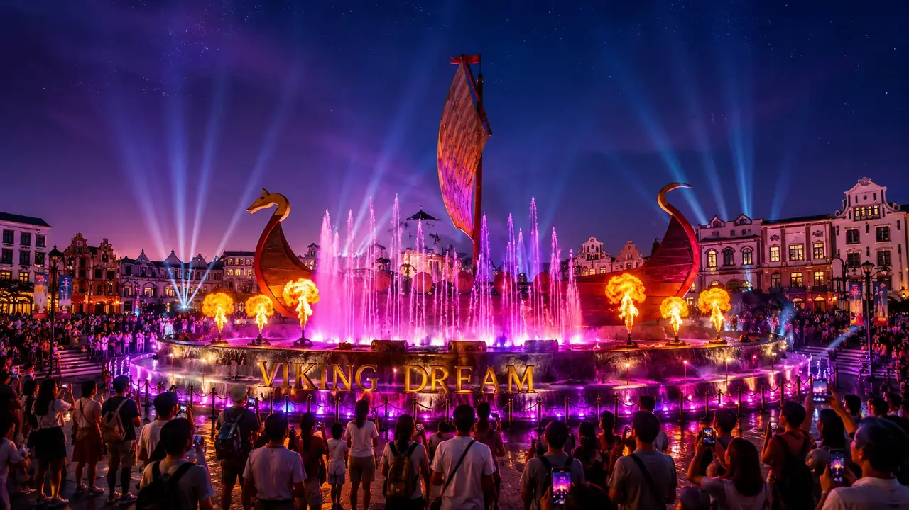
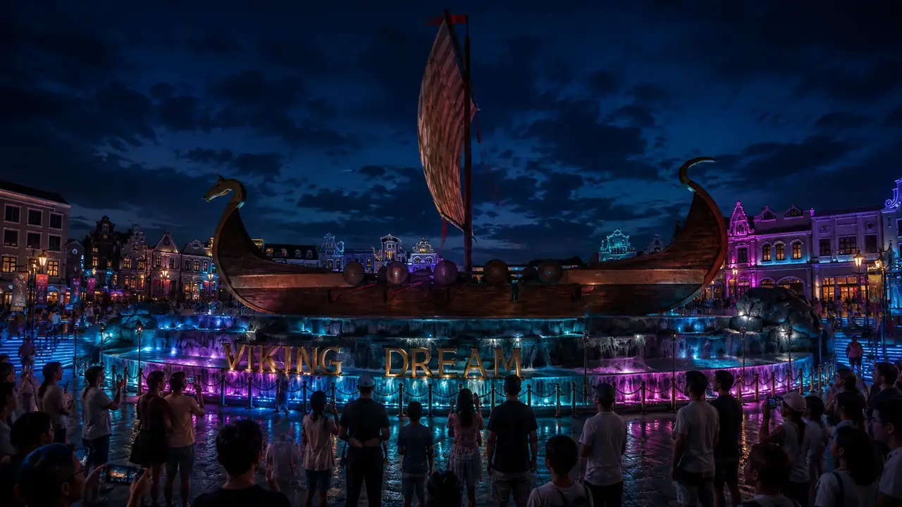

IRAN · MUSICAL FOUNTAIN & CULTURAL EXPERIENCE CONCEPT
Paradis,
Iran
A maritime landmark for the city: a sculptural vessel anchors a central fountain by day, then becomes the stage for a scheduled evening show.

DAYTIME LANDMARK
In its everyday mode, the vessel remains the focal point while foaming jets and low cascades animate the basin. The calmer water creates a gathering place and keeps the landmark legible within the public space.

A PLACE FOR GATHERING
From a daily landmark to a shared evening event.


SHOW EXPERIENCE
At selected times, high vertical jets, supporting water lines, coloured light and timed special effects frame the vessel. Music gives each sequence its narrative, building from a quiet opening toward a broad finale.
CULTURE AT HUMAN SCALE
A proposed heritage boat visitors can enter and explore.

HERITAGE & INTERPRETATION
A separate full-scale vessel is imagined as a participatory cultural experience, with space for locally curated displays, maritime stories, guided interpretation and family exploration. Traditional music and oral histories could connect the setting to Persian culture and coastal life.